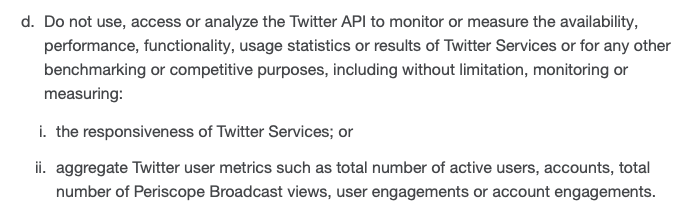

Mergers and Acquisitions in Big Data
While the cultural and economic value of data from digital technologies continues to rise at a rapid pace, a consequence of this immense value is restricted access. Digital data sources include social networks, search engines, content providers, news aggregators, web services, mobile applications, and the Internet of Things (IoT). Research access to many digital sources remains limited because digital technologies are often proprietary and the most valuable data types are protected for the sake of targeted advertising or sold for marketing and product development research. This poses significant problems for scholars who want to study the cultural impact of digital activism, the network effects of viral media, the history and circulation of digital artifacts, and the effects of emerging digital technologies. As Aral Balkan argues, proprietary approaches to digital data are rooted in a “Silicon Valley” business model wherein user data from web/mobile applications and other digital technologies (such as IoT) provide a significant and growing source of revenue for both nascent and established digital technologies. While this model remains a key motivator behind digital privacy infringements, corporate surveillance, and the manipulative forms of data mining exemplified in Facebook’s Cambridge Analytica scandal, this section will focus on another troubling business practice that directly affects humanities scholars access to digital data: corporate acquisitions and mergers in the big data industry.
As we mentioned in the introduction, Eunsong Kim’s “The Politics of Trending” was published in 2015 to demonstrate how Twitter’s trend monitoring algorithms were ignoring—and potentially suppressing—trends associated with #blacklivesmatter. Kim used Topsy—a trend analytics tool for various social networks—to conduct her research. While Kim relied on Topsy’s free trend analytics to investigate why trends like #Ferguson were not appearing on Twitter’s trending lists for the United States, Topsy used these same free services to up-sell potential clients on their more comprehensive business data services. Certainly, there’s nothing wrong with a business providing a valuable service, and charging other businesses a reasonable fee for that service—assuming that their business practices are ethical and legal. But when most of the accessible toolsets for studying social networks are designed for marketing and product development research—aside from toolsets made available in programming languages such as R and Python, which require high-level programming skills to use—this creates a needless bottleneck constraining the types of research questions we can explore (Beveridge). However, while marketing tools like Topsy have many limitations when used for academic research, they still support research like Kim’s “The Politics of Trending.”
There are two key reasons why it is no longer possible to replicate the results of Kim’s research. First, Apple purchased Topsy in 2013 for $200 million, and then proceeded to shut Topsy down entirely in December of 2015. Therefore, it is literally impossible to use Topsy as Kim did for her article. The former director of business development at Topsy, Aaron Hayes-Roth—who was unhappy with Apple’s decision to shut Topsy down—wrote an editorial trying to answer a simple question: why would Apple pay $200 million for a business like Topsy, only to close its doors two years later? According to Hayes-Roth, Apple wanted to use Topsy’s data mining technology to compete with Google’s search/advertising services and thus Apple closed Topsy to use its data and computational technologies for Apple’s own search services (cite). Thus, the erasure of Kim’s methods were a consequence of Apple trying to compete with Google (cite), but this example is not an isolated incident—this is a direct consequence of a venture capital business model that drives the development of most digital technologies. The sarcastic profile description on Topsy’s still-available Twitter page summarizes the problem well: “Every Tweet ever published. Previously at your fingertips” (emphasis added).
Figure 1: Aral Balkan discussing the fundamental problems with the "free" venture capital business model (35:02).
Humanities scholars must question the use and sustainability of “free” cloud tools for data-driven humanities research (Figure 1). Certainly, there are some cloud tools that provide an immense service to data-driven humanities research, such as Voyant (which is available as both a cloud tool and as standalone open source software). Voyant’s free cloud application provides natural language analytics that are easy to use, and we regularly use this tool in our classrooms and workshops to teach text mining and to introduce data-driven methods. Many other cloud tools like Trendsmap and SumAll may appear useful for humanities research, but these tools were not built for peer-reviewed academic research—they were built for business analytics and influencer marketing. This is an important difference that needs more critical reflection. For example, when we started to test the application of data-driven methods for circulation research in late 2013—in preparation for our digital humanities quarterly article, “Attention Ecology: Trend Circulation and the Virality Threashold”—we used Trendsmap to explore trending topics and their movements from location to location. When it became apparent that Trendsmap and other similar tools would not export data without us having to pay fees we could not afford, Nicholas Van Horn decided to write code himself that would provide us with the raw data we needed from Twitter’s application programming interface (API). In the 5 years since we started MassMine, Trendsmap continues their limited “free” business model, intended to up-sell users for their fee-based services.
Again, we see nothing wrong with Trendsmap charging fees for useful services, but we have to seriously question the sustainability of these types of tools for academic research. For example, SumAll’s justification for providing free access to data analytics is as follows: “Since we’re still working on building great products for small businesses, SumAll is free. Think of this as our soft launch—no credit cards and no subscriptions required.” In other words, SumAll is explicitly telling users their free access will not be sustained. Humanities scholars should look to the future and ask: how long until SumAll is acquired, fundamentally changed, or no longer available? Similarly, we might ask ourselves: if humanities scholars produce research using data from SumAll, and then SumAll is acquired and closed like Topsy, how can future scholars trust the findings of research that relies on results that cannot be replicated, tested, or otherwise evaluated? Additionally, cloud applications like SumAll do not provide users with access to the underlying data and methods used to produce their analytics, and therefore users of tools like SumAll have to simply trust the data visuals (analytics) presented to them. This may not be a problem for business analytics, but it is impossible to peer review data visuals that are based on proprietary, black boxed methods.
In March of 2018, Facebook’s primary third-party data provider Datasift was acquired by Meltwater, a business analytics firm specializing in data mining technologies. Similarly, Twitter’s primary data partner GNIP, which Twitter purchased in 2014, has now been fully merged with Twitter’s new “Enterprise” developer services. While Facebook continues to systematically reduce the free public access to their data, Twitter has showed renewed efforts to work closely with developers in addressing the many democratic challenges facing digital networks. This is a good sign for digital humanities researchers, as Twitter and GNIP have provided many useful datasets for answering challenging questions about the changing nature of social movements in digital environments and the effects of networking technologies on democratic discourse. These changes at Twitter are promising, as are other recent trends, like Apple’s efforts to be an industry leader in protecting user privacy rights. However, the public availability of proprietary digital data (like Twitter data) for academic research has not improved since 2015, and relying too heavily on Twitter data as we develop sustainable data-driven methodologies for the humanities poses a significant risk. Twitter is a publicly traded corporation whose main goal, by that very definition, is providing its shareholders with profitable returns on their investments through the monetization of public and private user data for targeted marketing and the selling of advertisements. In this regard, Twitter and Facebook are the same.
This brings me to the second reason why it is no longer possible to replicate the results of Kim’s research: Twitter no longer allows it. Twitter’s newest terms of service—which were likely revised in response to tools like Topsy—reads as shown in Figure 2:
Figure 2: Twitter Terms of Service July 2019
Figure 2 is a screencapture of Twitter’s terms of service from July 2019, and it shows how Twitter now explicitly blocks the use of their data for benchmarking or for testing the effectiveness (“responsiveness”) of Twitter as a network. In other words, Twitter now blocks the use of their proprietary data—data that they received for free from users who post on their network—and if those same users want to aggregate that data to test the effectiveness of Twitter, that is explicitly prohibited. Twitter’s terms of service stops users from aggregating their data and testing whether or not Twitter—or Twitter’s advertisers—are overtly manipulating trends and user feeds. As we learned from Facebook’s Cambridge Analytica scandal, a lack of accountability for social networks is not only a threat to the open circulation of diverse ideas and content, but a very real threat to sovereign government elections and the democratic discourse on which those governments and elections are founded.
It is no stretch to say that open access to digital data—of all kinds—is among the most exigent contemporary issues facing digital visual studies, digital rhetoric, and the digital humanities. While we are encouraged by recent efforts to discuss the regulation of social networks among U.S. lawmakers, we fear that the current regulatory climate in Washington D.C. will not lead to the type of accountability that ought to be immediately enacted. The next section will XXX conclude and transition XXX
Next Section